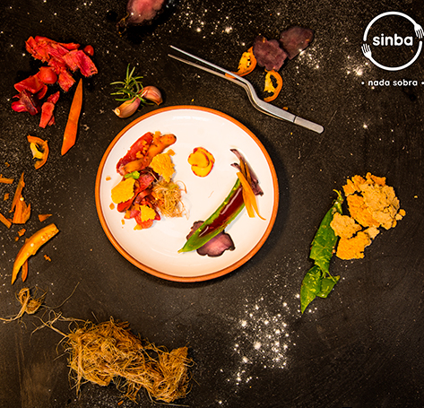
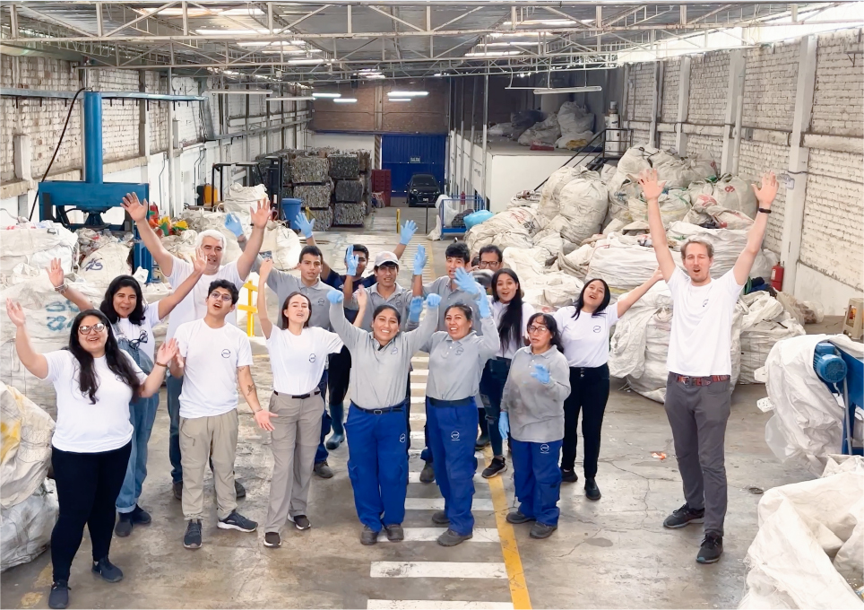
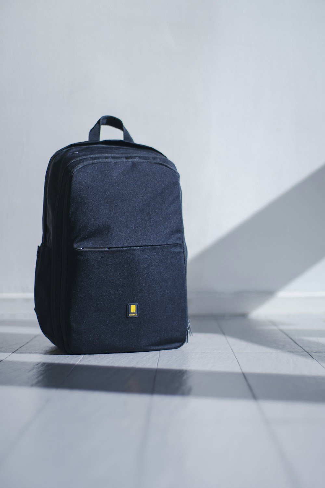
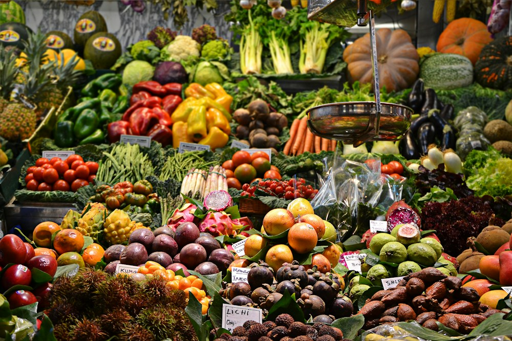

Educación ambiental
Promovemos el aprendizaje sobre el reciclaje, la reducción de residuos y la economía circular.
Aprender másPor un mundo sin basura
En Sinba trabajamos para reducir los residuos y darles una nueva vida. A través de la economía circular, transformamos la basura en recursos que benefician al ambiente y a las personas.
Descubre cómo ayudar Conoce SinbaPequeñas acciones pueden generar grandes cambios.


Conoce nuestra iniciativa
Sinba es una empresa socioambiental peruana que busca reducir la contaminación y aprovechar mejor los residuos. Su propuesta se basa en la economía circular, un modelo que permite transformar los desechos en nuevos recursos.
Cocrear un mundo sin basura, donde los materiales puedan aprovecharse nuevamente y las personas participen en el cambio.
Además, Sinba trabaja junto con recicladores para contribuir a su desarrollo personal y profesional.
¿Cómo generamos el cambio?
Promovemos el aprendizaje sobre el reciclaje, la reducción de residuos y la economía circular.
Aprender másImpulsamos una correcta separación de los residuos para facilitar su aprovechamiento.
Identificar residuosLos residuos orgánicos pueden convertirse en abono y los reciclables en materia prima para nuevos productos.
Conocer el procesoAprende con Sinba
Selecciona una opción y descubre cómo se puede aprovechar. Esta guía es una simulación educativa.
Ejemplo educativo. El aprovechamiento depende del tipo de material y de las condiciones en que se encuentre.
Cómo sería el servicio
La mesa de ayuda recibiría objetos encontrados sin exhibir detalles privados.
Una persona responsable revisaría los detalles de la solicitud.
Si existe coincidencia, se acordaría una devolución en un punto atendido.


“No era solo una libreta. Ahí estaba el dibujo que me hizo mi hija”.
Relato ficticio para representar la necesidad del usuario.
HU de ejemplo · Solicitar una devolución
Completa datos ficticios para probar el recorrido. En un servicio real, una persona revisaría tu solicitud antes de coordinar una entrega.
Esta práctica no guarda datos ni registra solicitudes. No ingreses información personal real.